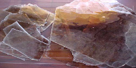

Ligue: +55(11) 3901-6350
Mica Muscovita é a variedade largamente usada e que apresenta melhor transparência, resistência dielétrica e maior perfeição de clivagem, podendo ser facilmente separada em palhetas.
A mica é um filossilicato constituído a base de alumínio, potássio ou sódio e muitas vezes magnésio e ferro. A classificação padrão para a mica em bloco tem espessura mínima de 0,18 milímetros e área mínima de 6,45 cm2. No caso específico do filme, a espessura ideal é de 0,03 milímetros a 0,10 milímetros e no do tipo splitting, a espessura mínima é de 0,03 milímetros e a área é de 4,84 cm2
Dimensões comercializadas: 1hs, 2hs, 3hs, 4hs, 5hs

Propriedades técnicas |
|
| Tipo | Moscovita (Muscovita) |
| Dureza (Mohs) | 2-2,25 |
| Densidade | 2,7-3 |
| Brilho | Vítreo a perláceo |
| Sinal óptico | Negativo |
| Sistema cristalino | Monoclínico |
| Classe de simetria | Rômbico ou hexagonal |
| Cor | Cinza, marrom, verde claro, violeta, verde olivina, verde olivina escuro e vermelho rubi |
| Traço | Incolor |
| Outras propriedades | Transparente a translúcido |
| Mica granítica ou alcalina | Nome do mineral | Nome comercial | Principais elementos adicionados ao Al e ao Sio 2 | Fórmula |
| Moscovita (Muscovita) ou mica potássica | mica branca | potássio | KAl 2 (AlSi 3 O 10 )(OH) 2 |